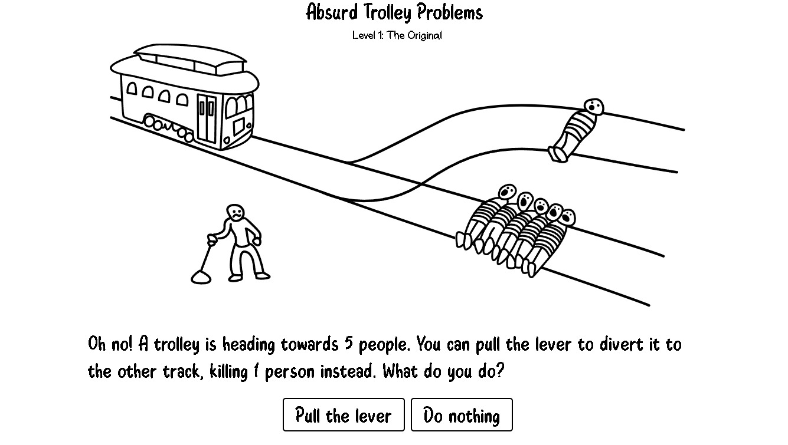

Atividade favorita de Filosofia

A atividade sobre ética com base no dilema do trem, foi a minha favorita porque provoca uma reflexão sobre escolhas morais difíceis, como equilibrar o maior bem para o maior número com a responsabilidade individual. Esse tipo de dilema ajuda a entender diferentes perspectivas éticas e sua aplicação em decisões reais.